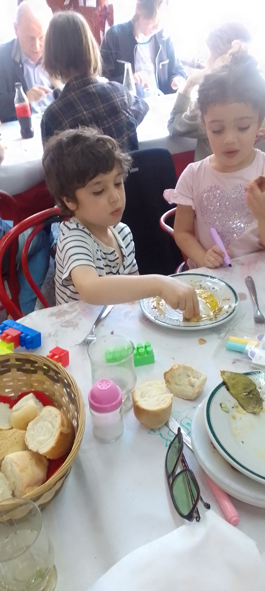
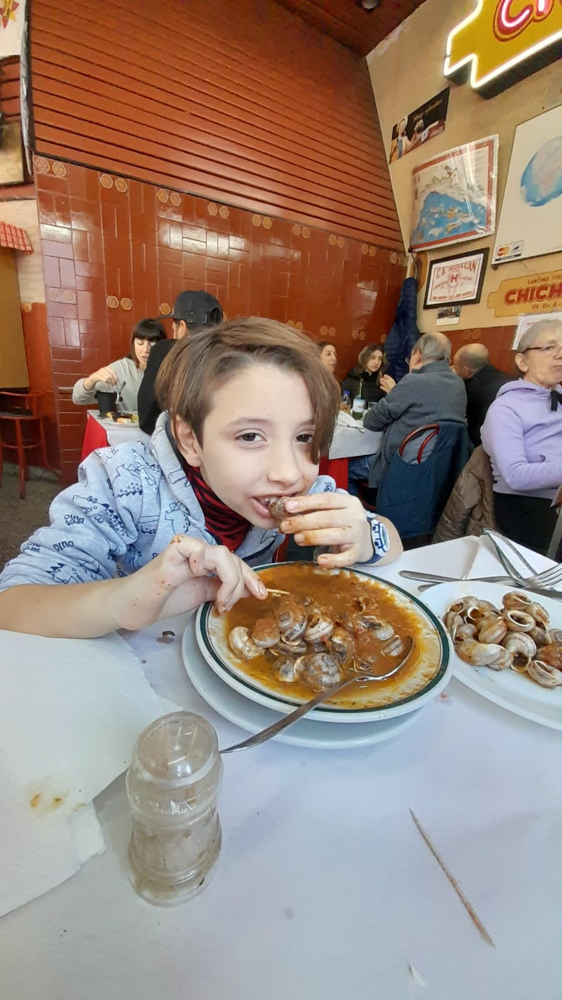
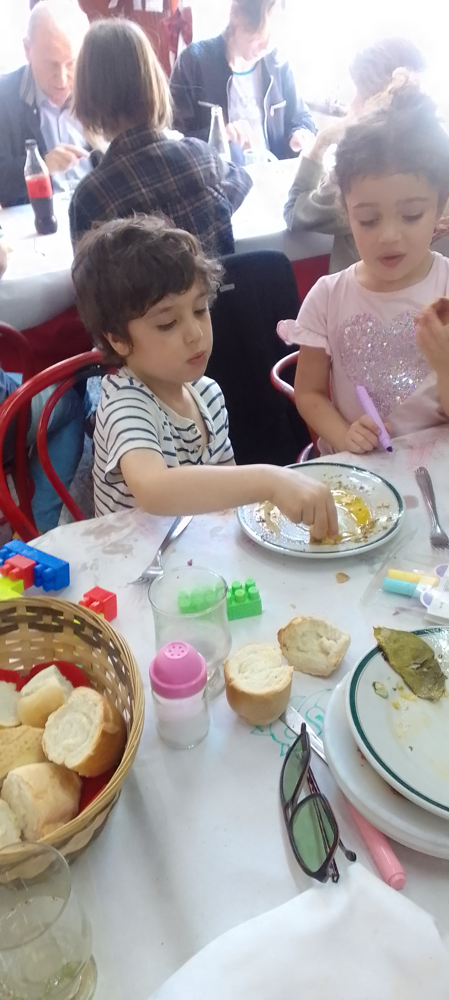
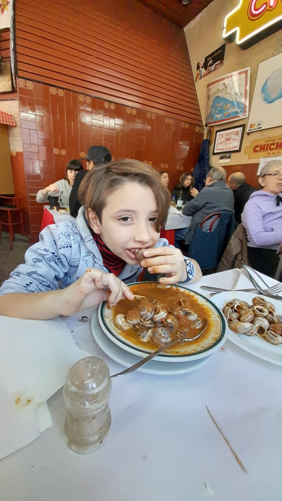

Platos Destacados
Horarios: Jueves a Sábados de 20:30 a 00:00 hrs. / Sábados y Domingos de 12:30 a 14:30 hrs.
 Lentejas a Caballo
Lentejas a Caballo Pasta con Chichiri-Ceci
Pasta con Chichiri-Ceci Mondongo a la Italiana
Mondongo a la Italiana Riñones al Vino Blanco
Riñones al Vino Blanco Calamarettis a la Escarpetta
Calamarettis a la Escarpetta Fusiles al Ferretto
Fusiles al Ferretto Ranas a la Provenzal
Ranas a la Provenzal Caracoles a la Bordaleza
Caracoles a la Bordaleza Rabas a la Calabria
Rabas a la Calabria Merluza al Ajillo
Merluza al Ajillo Gambas al Ajillo
Gambas al Ajillo
Galería de Imágenes
 





Contacto
Email: chichilo3554@hotmail.com
Dirección: Camarones 1901, esquina Terrero 2006, CABA, Argentina
Teléfono: 011-4584-1263
Instagram: @cantinachichilook